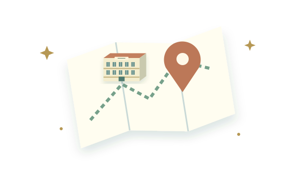
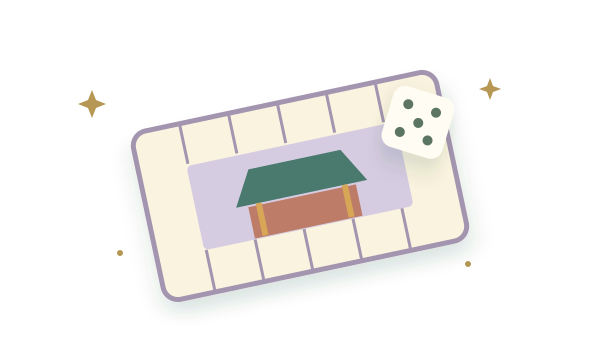

教師作品01 / EXPLORE A PLANET自由探索・任務冒險
TONGLE DIGITAL PLAYGROUND
從同樂出發，
讓學習無邊界。
把熟悉的校園，變成探索世界的起點。
走進虛擬校園、展開星球冒險，在遊戲與互動中，
發現屬於自己的學習樂趣。
在地校園 × 數位探索 × 遊戲學習
每一次好奇，都是新的起點 ✦ 下一站，發現更多可能IMAGINE. EXPLORE. LEARN.
一座校園，無限種學習風景07 數位作品03 探索主題從生活出發，在體驗中學習 ✳
THE COLLECTION / 作品探索
選一扇門，開啟新世界。
想漫遊、想挑戰，還是帶一堂不一樣的課？
從你的好奇心開始，找到今天的學習入口。
共 7 項作品
教師作品02 / WALK INTO CAMPUS完整版・教育帳號登入
校園探索 ✦ 沉浸體驗
同樂校園導覽
同樂國小 3D 校園完整版。從鳥瞰到第一人稱，換個視角認識校園，走進走廊與教室、探索樓層配置，也能在相容裝置體驗 VR。宜蘭縣教育帳號（tmail／smail）登入後使用。
進入完整校園導覽 （另開分頁）教師作品03 / FIND YOUR WAY

免登入・中英切換教師作品04 / READY FOR SAFETY防災素養・互動搶答
教師作品05 / PLAY OUR STORIES

70 週年・校園嘉年華教師作品06 / MAKE LEARNING YOURS自訂題庫・課堂互動
教師作品07 / READ AROUND TOWN小鎮漫遊・閱讀挑戰
卡片圖片為作品主題概念插畫；實際畫面與功能請以各作品網站為準。作品連結均另開分頁。
ROOTED HERE. OPEN TO EVERYWHERE.
科技有溫度，
學習有自己的樣子。
從熟悉的校園與地方文化出發，讓數位工具成為觀察、體驗與表達的媒介。
01
在探索中，建立連結
以校園空間為學習情境，從觀看、行走到尋路，重新認識每天生活的地方。
02
在遊戲中，主動思考
透過任務、選擇與回饋，鼓勵嘗試、討論與修正，讓經驗成為學習的起點。
03
在互動中，創造意義
結合視覺美感、在地故事與課堂對話，讓「形」的體驗，連結「意」的理解。
YOUR NEXT ADVENTURE
今天，從哪裡開始？
選擇適合的入口，讓好奇心帶路。
使用前的小提醒
入口網站適合手機、平板與電腦瀏覽。3D 作品的流暢度依裝置效能而異；VR 須使用支援 WebXR 的裝置與瀏覽器。問答作品跨裝置連線需保持網路暢通，課堂活動前建議先試連；防災題庫請由教師配合最新官方指引審閱後使用。